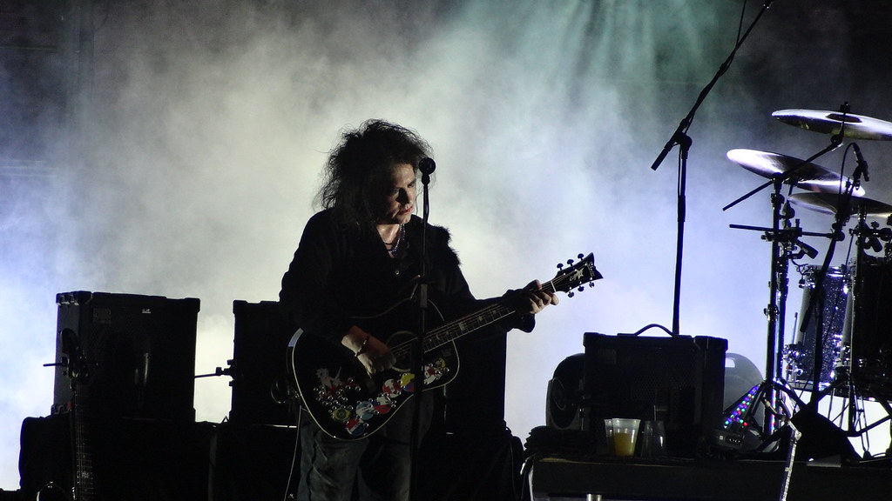
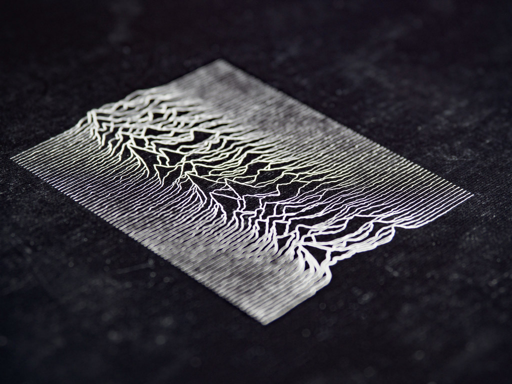
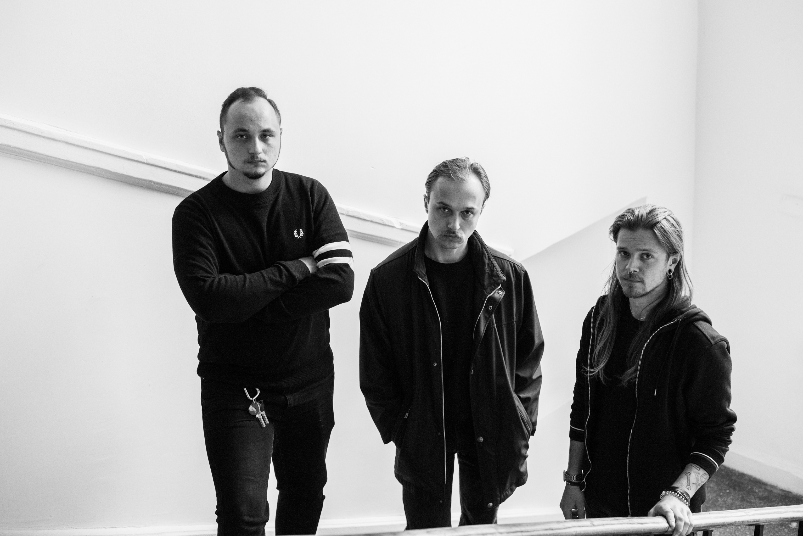
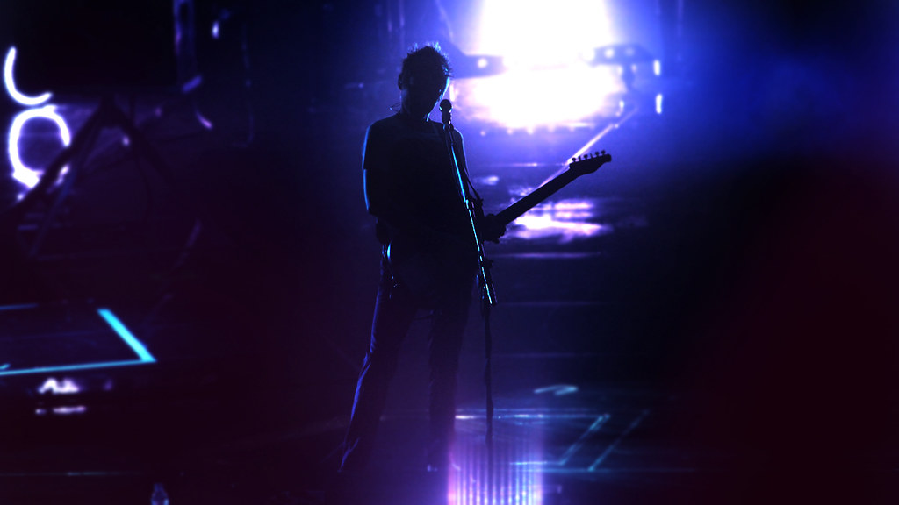
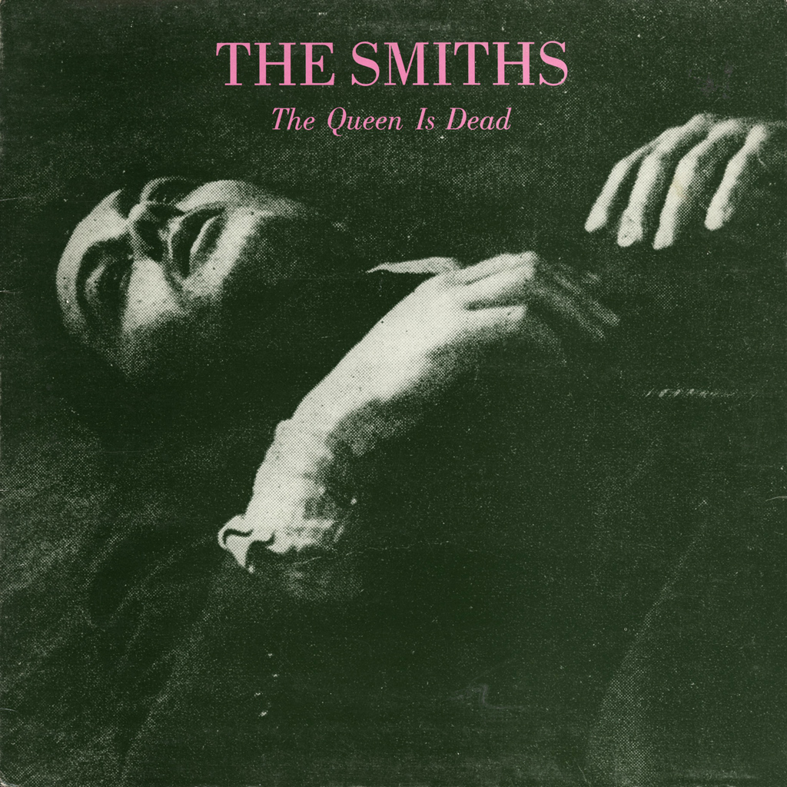
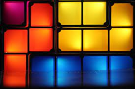

Titolo: Lovesong
Autore: The Cure
Album: Disintegration
Anno: 1989
“Ogni volta che sono da solo con te, mi fai sentire come se fossi a casa di nuovo”, una canzone che esplora la complicità, la bellezza e purezza di un amore.
Lovesong, con le sue parole semplici, fa sentire, per qualche instante, vivi. Ed infondo non è proprio questo il cuore della musica?
Note da Bere con Periwinkle.
Ingredienti: Gin Empress 1908, Elderflower Liqueur, Lemon Juice, soda water, 3 blue pea ice cubes with rose tea petals
Titolo: Love Will Tear Us Apart
Autore: Joy division
Album: Closer
Anno: 1980
Una ferita sempre aperta, che alle volte ci si dimentica ma che periodicamente ritorna a bruciare sempre più forte. L’amore, nella sua forma più spirituale, ci fa a brandelli. L’amore crea e distrugge continuamente.
Love Will Tear Us Apart è struggente ma accogliente, è una dimensione che trascende ma allo stesso tempo viscerale.
Note da bere con Brooklyn reloaded
Ingredienti: Amaro Lucano, Bulleitt Rye Whiskey , Americano bianco Cocchi, Maraschino Luxardo, 1 Fetta d’arancia caramellata


Titolo: Судно (Борис Рижий)
Autore: Molchat Doma
Album: Ėtaži
Anno: 2018
Brano mistico, pura magia, caratterizzato da una maestosità cupa dei testi e amarezza esistenzialista mentre si racconta della scomodità della vita. I Molchat Doma hanno una straordinaria capacità di creare immaginari visionari che catapultano indietro nello spazio e nel tempo.
Note da Bere con Sakétini
Ingredienti: Belaya Rus Vodka, saké, cucumber
Titolo: Starlight
Autore: Muse
Album: Black Holes and Revelations
Anno: 2006
“Io seguirò la tua luce delle stelle” limpida, intensa, profonda e spaziale. Questa traccia fu ritenuta la traccia “chiave” dagli stessi Muse, un intreccio di amore, profonda nostalgia e desiderio di seguire la luce e stringere forte lei al petto.
Note da Bere, dall’aroma inconfondibile, Disaronno Godfather
Ingredienti: scotch whisky,Disaronno e scorca di arancia


Titolo: There Is a Light That Never Goes Out
Autore: The Smiths
Album: The Queen Is Dead
Anno: 1986
Malinconico, introspettivo, spontaneo nell’esprimere la profonda tristezza. Un testo che racconta la storia di due amanti e la loro profonda relazione, una linea sottile fra amore mai dichiarato completamente e morte, fino ad arrivare all’incidente sul sedile accanto alla persona tanto voluta.
“La luce non si spegnerà mai” rappresenta la luce dell’amore, quell’amore inespresso
Note da Bere con Lagavulin 16 years old, un single malt Scotch whisky torbato invecchiato per almeno 16 anni
Autore: Human Tetris
Titolo: Things i don't need
Anno: 2010
Album: Things i don't need
Un disperato bisogno di aiuto e la paura che il ricordo di dettagli si possa dissolvere, semplice nelle parole ed estremamente delicata.
Note da Bere con Hibiki Harmony Whisky, di origine giapponese, leggermente amaro, delicato ma allo stesso tempo complesso.
